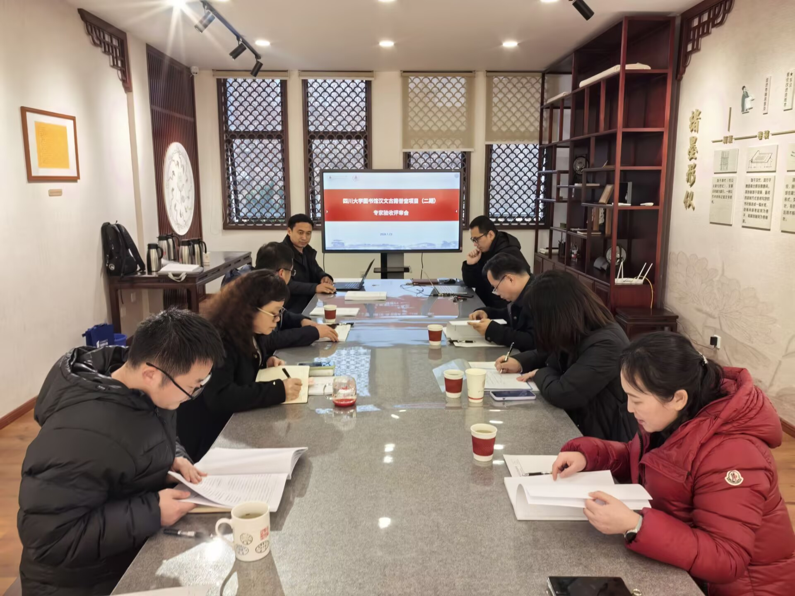

学院通知 · 教学通知
四川大学图书馆汉文古籍普查项目(第二期)顺利通过 专家验收
发布时间：2026-01-27 00:00:00
2026年1月23日下午，四川大学图书馆汉文古籍普查项目（第二期）专家验收评审会在望江校区文理图书馆顺利召开。 此次验收会由四川大学图书馆副馆长张盛强主持，四川省图书馆副馆长杜桂英、四川师范大学图书馆副馆长杨杰和成都中医药大学图书馆古籍部主任林英组成专家组，古籍特藏中心相关人员以及项目实施单位参加了会议。 验收会上，古籍特藏中心副主任丁伟汇报了此次普查馆藏古籍的基本情况，项目实施单位代表汇报了项目实施的具体过程。专家组对项目组提交的75044册古籍普查数据、书影资料等通过抽查表格、核验书影样本等方式进行了全面评估和严格评审，一致认为项目成果符合《四川省汉文古籍普查工作手册》标准，提交的普查数据涵盖必备字段，书影拍摄规范，标识真实可追溯，最终四川大学图书馆汉文古籍普查项目（第二期）验收顺利通过专家验收。 该项目的顺利验收，不仅为四川大学古籍保护、修复与利用进一步筑牢根基，也为图书馆古籍资源整合提供了有力支撑。 图文/沈玉娇 审核/张盛强 何艳艳
